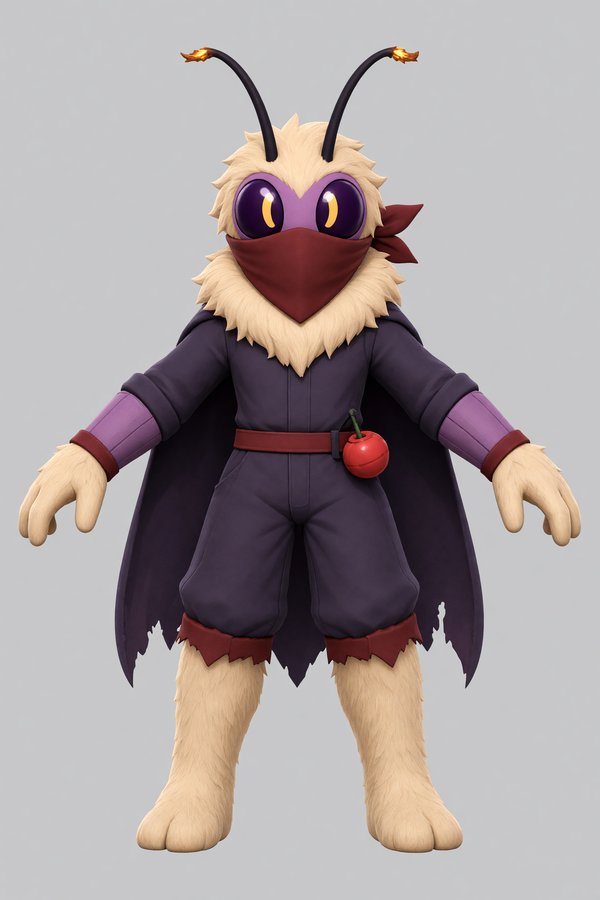
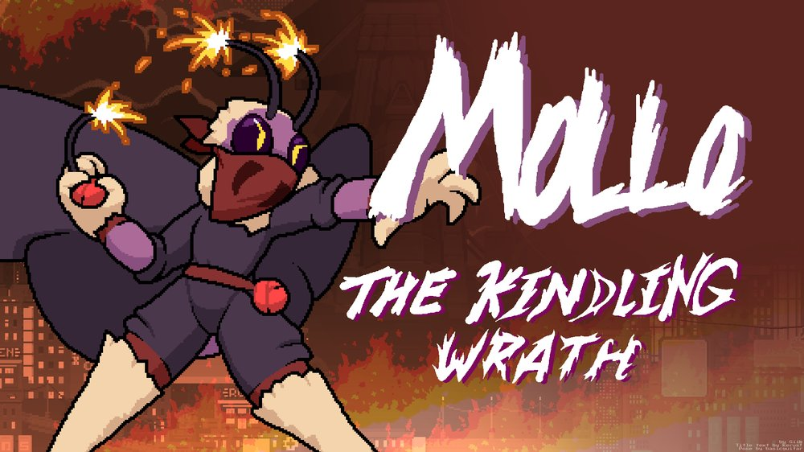
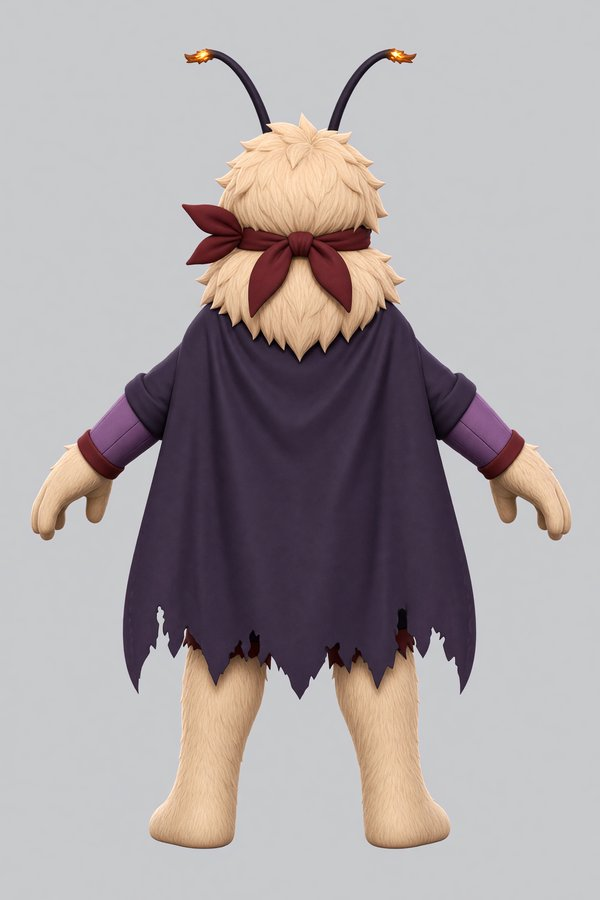
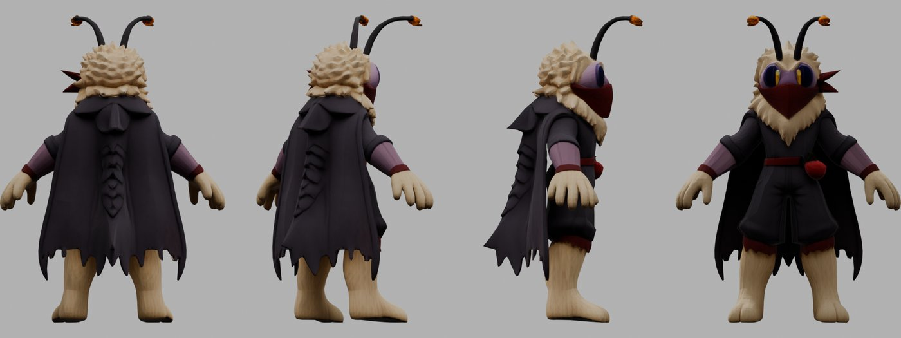
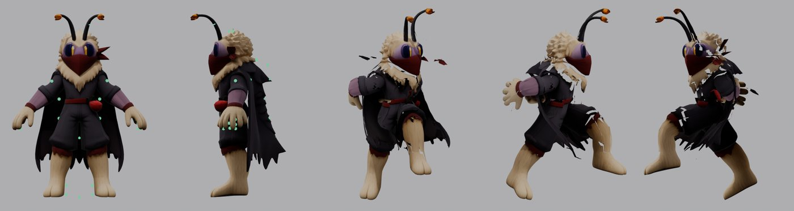
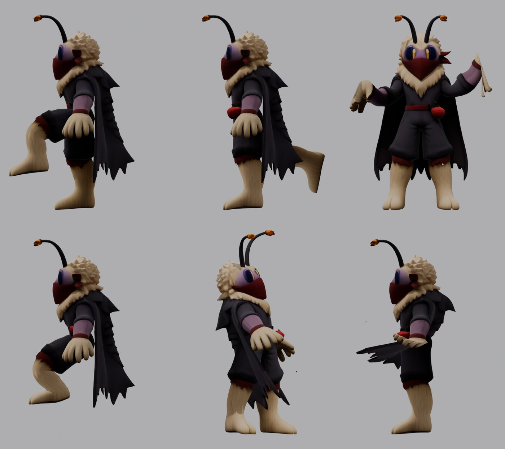
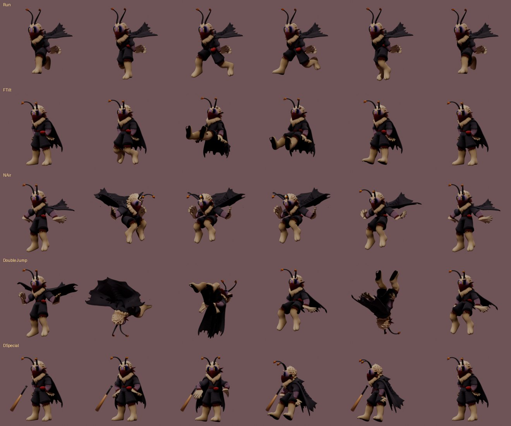
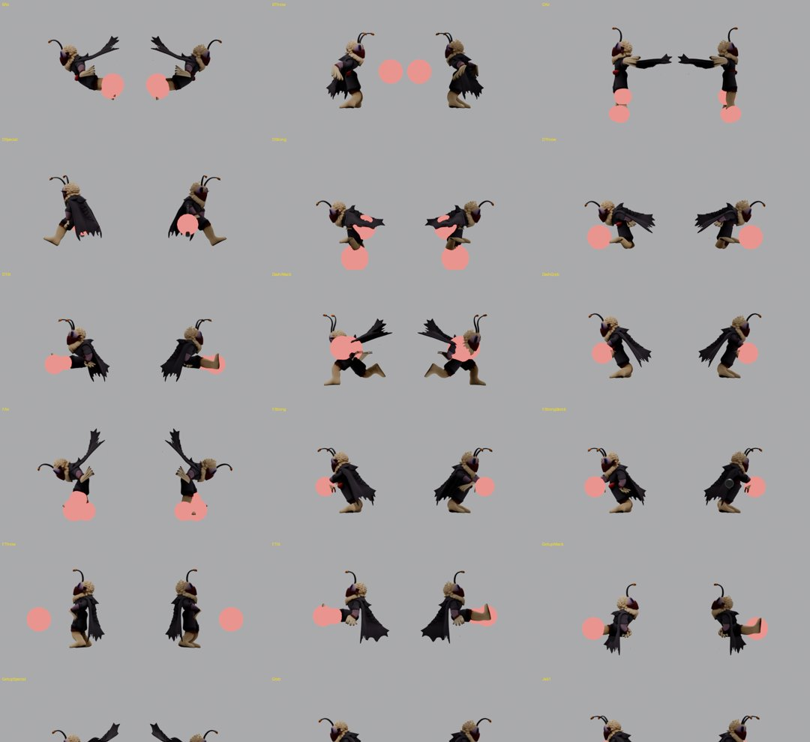

What it takes to turn a 2D fan-favorite into a 3D fighting game character, step by step. What the AI did, how it did it, and why a chat window alone could not have done it.

Rivals of Aether 2 is a platform fighter, like Smash Bros. Its developers released a free Workshop: a modding kit that lets anyone add characters to the game. The request was simple to say and big to do:
The request. "I want to port Mollo into Rivals 2 as a mod character. Read the documentation with attention and build everything. Ask me any questions you want, and take all your time."
Mollo is a moth in riot gear from the first Rivals game. His antennae are lit fuses, he wears his wings as a tattered cape, and he fights with bombs. In the first game he was a 2D pixel-art character. Rivals 2 is a 3D game. So "porting" him means rebuilding him from scratch in 3D.
If you have never modded a fighting game, here is the shopping list. Each item is explained in the glossary at the end.
A professional studio spends weeks or months on one character, with a modeler, a rigger, animators and a designer. This report shows how far one evening of work with an AI agent got.
There are two very different ways to use the same AI model.
Claude (the chat). You type, it answers with text. It can explain, plan and write code. But it lives in a window. It cannot open your files, launch Blender, download anything, or see what its code produced unless you show it.
Claude Code (the agent). The same model, given tools: a terminal on your computer, your file system, a web browser, the ability to look at images. It writes a script, runs it, looks at the result, and fixes it. You stay in charge, and it asks before anything risky.
Almost every useful discovery in this project came from one cycle, repeated dozens of times:
↻ about 45 Blender runs in this project
In a chat, you would be steps 2, 3 and 4: copy the script, paste it into Blender, take screenshots, upload them, describe what you see, copy the next fix. Possible, but slow, and error-prone for a beginner who cannot yet tell a weight-painting bug from a bone-placement bug.
| Task in this project | Claude chat | Claude Code |
|---|---|---|
| Read the 50 pages of Workshop docs | Partly: with web access, page by page | Yes, then kept them as working notes |
| Check what is installed on your PC | No | Yes: found Rivals 1 and 2, Blender, Steam folders |
| Download the official reference skeletons | No | Yes, after asking you |
| Generate concept art, turn it into 3D | No (it can write the prompt) | Yes: called the image API and TRELLIS |
| Write the Blender scripts | Yes | Yes |
| Run them and see the result | No: you run them, you send screenshots | Yes, headless, then looks at its own renders |
| Find and fix the 10 bugs of chapter 5 | Only through your screenshots, one round trip each | Yes, each one in minutes |
| Bake and export 125 animations | No | Yes, 1 minute 20 per full rebuild |
| Log into Epic, click inside Unreal | No | No: your accounts, your clicks |
| Play the character and judge the feel | No | No: only a player can |
Be fair to the chat. A patient beginner with a chat AI could reach the same result. They would have to run every script themselves, describe every render, and catch every mistake by eye. The model's knowledge is the same; the hands and eyes are what change.
The AI read the official Workshop documentation: installation, the 3D character pipeline (model, rig, animation, textures, export), attacks, throws, articles (projectiles), file naming, and the list of known bugs. It also found the frame data of every Mollo attack on Rivals Academy, a community wiki, as a clean data file (YAML).
Then it checked the computer: Rivals 1 and Rivals 2 were installed, Blender 5.2 too, but not the Mod Kit. It also noticed that Mollo's original sprites are locked inside the Rivals 1 game file, because he is now an official character.
An agent should not guess what only you can decide. It asked four questions before building anything:
It then asked permission before spending money (image generation) and before downloading the official reference files.
A 3D generator needs a clean picture: one character, front view, arms away from the body ("A-pose"), plain background. The AI sent the original Rivals 1 key art to an image model (Grok, through the Higgsfield API) with a detailed description. Then it asked for the back view, using the front as reference so both match. Cost: about 19 cents.


TRELLIS is a free research model hosted on Hugging Face. It takes images and returns a textured 3D model. Given the front and the back, it built Mollo in about two minutes: 23,000 triangles, half of the Workshop budget.

The AI then measured the model against the docs: Rivals 2 wants characters facing a specific direction, standing on the ground, in centimeters, around 180 to 200 cm tall. It also opened the official reference skeletons of Zetterburn and Wrastor and read their bone names, so Mollo uses the same conventions as the real cast.
Rigging means placing bones inside the model and deciding how much each bone pulls each point of the surface (the "weights"). This is where most beginners get stuck, and where the write-run-look loop earned its keep. The AI built a test that poses Mollo in six extreme ways (kick, leg back, arms up, crouch, twist, cape flap) and looked at the result after every change.


Animating 125 states by hand in Blender would take weeks. Instead, the AI described each pose as a short list of rotations, in plain directions: "lift the left thigh 75 degrees forward, bend the knee 80". A script turns these lists into keyframes. Three tricks made it work:

The movement set covers every state the docs list: walking, running, jumps, shields, rolls, getting hit, lying on the ground, hanging on ledges, being grabbed, holding items. These are first-pass animations, which the docs call "gameplay quality": clear poses and correct timing, not yet polished.
In a fighting game, timing is everything. Mollo's first jab hurts on frames 6 and 7, then he needs 12 frames to recover. Each attack was built from the original numbers, so every animation lasts exactly as long as in Rivals 1:
| Attack | Startup / active / recovery | Damage | What Mollo does in 3D |
|---|---|---|---|
| Jab 1 | 5 / 2 / 12 frames | 3 % | Quick left punch |
| Forward tilt | 9 / 5 / 21 | 9 % | Straight riot-boot kick |
| Neutral air | 6 / 4 + 6 / 11 | 2 + 5 % | Spin with the cape-wings open |
| Up strong | 13 / 4 hits / 26 | 2+2+2+5 % | Firework fountain over his head |
| Down special | 38 / 3 + 3 / 22 | 6 / 11 / 16 % | Baseball bat, sweet spot at the tip |
A hitbox is an invisible sphere that hurts whoever touches it. Each one was attached to a bone (a fist, a foot, the bat) with a size in centimeters. Then the AI rendered every attack at its active frame with the hitboxes drawn in red, from both sides, to check they sit where the hit visually lands.

Finally, everything was exported with the exact settings from the docs: one FBX file for the model and skeleton, one for the 125 animations, four textures with the official name suffixes, and an entry sheet listing every number to type into Unreal for the 36 attacks. Every step is a script, so changing one pose rebuilds everything in about a minute and a half.
Even an agent with tools hits walls. These are the parts of the project that stayed (or will stay) human.
Next steps (phase 2). Install the Mod Kit close to a drive root (for example G:\R2ModKit) and let it compile shaders, which can take an hour. Then the AI reads the Lua docs and engine files from disk, prepares the import, and writes the bomb system: four bomb types chosen by direction, a 120-frame fuse, the flare gun that detonates them, and the bat that launches them.
Things go wrong, even for an AI. Here is every problem found during the build. None could have been spotted by reading code alone: each one appeared in a render. This list is the real argument for an agent that can see its own results.
The model ripped apart at every joint.
TRELLIS outputs the surface in separate pieces along its texture seams, so each piece moved on its own. Fix: weld the pieces before attaching the bones (16,000 points down to 11,500).
When Mollo kicked, the cape stretched into a sail between his leg and the floor.
The generator had fused cape and legs into one surface. Fix: from every point, shoot a ray toward the leg bone. If it crosses another surface first, that point is cape, not leg.
The leg bones were placed along the inner edge of the legs.
The first estimate (13 cm from the center) came from the concept art. Measuring the cream-colored fur on the model gave 24 cm. Fix: place bones from the measured fur.
With planted feet, the knees pointed sideways and the legs twisted.
A trial-and-error search for the knee direction found inconsistent values. Fix: compute it with the standard formula instead.
The first crouch looked like sitting on a chair. The running cape stuck out in front.
For the same rotation, bones pointing up (spine) and down (legs, cape) move in opposite directions. Fix: write the rule at the top of the pose file and flip the signs.
Hitboxes appeared at belly height, arms not yet extended.
The strike pose was reached at the end of the hitting window instead of the start. Fix: the arm snaps into the strike on the first active frame, as in real fighting games.
The flare gun pointed at the floor; the rocket was grabbed with one hand down.
Three right-arm poses were written with the left arm's directions. Fix: audit every right-side pose.
Throws would not move the grabbed opponent.
The special bone that carries the opponent (Grab_M) was never animated. Fix: give each throw a hold and a release position.
The bomb, bat, can and gun texture came out fully black.
An image created by a script is lost when the file is saved, unless it is packed inside. Fix: pack it, and protect it from the shadow-baking step.
The bat is held along the forearm instead of across it. The hanging-on-ledge position is a guess until it can be compared with a real character in the editor.
You want to mod your own character? Here is the path, assuming you have never done it.
rivals2.com/workshop) and anything about your character: drawings, a wiki page, a frame data sheet.Set expectations. AI got this character from nothing to a full set of game-ready files in one evening. That does not make it a finished character. Generated models need cleanup, script-made animations look stiff next to hand animation, and only playtesting tells you whether the character is fun. Treat the AI as a fast, tireless assistant that still needs your eyes and your decisions.
Sources: Rivals 2 Workshop documentation (rivals2.com/workshop) · Rivals Academy frame data for Mollo, patch 2.1.5.6 (rivals.academy/library/mollo) · Mollo by Giik on the Rivals of Aether Steam Workshop (item 1871989159). Mollo and Rivals of Aether are property of Aether Studios. This document describes a private, non-distributed mod.